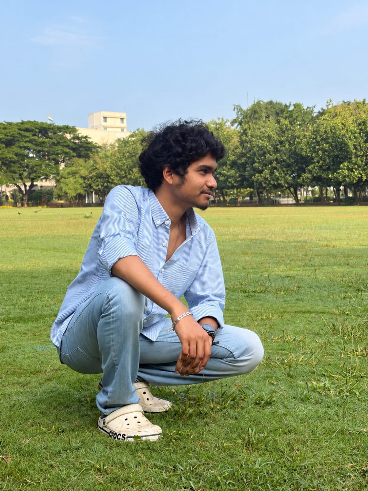

DEVELOPER
Vamsi
vamsip2008@gmail.com ↗Gesture Video brings touch-free playback to your browser using this device’s camera.
VERSION 2.1.1 · PUBLIC WEBChoose a video. Let your hands take control.
Select a video. Enable your webcam. Let your hands take control.
No phone or pairing needed.Your videos stay on the device playing them. No cloud account.
Keep both devices on the same private Wi-Fi.
The code refreshes every five minutes.
Download the Android app ↓In the phone app, tap Scan QR instead.
One hand. Good light.
You’re ready to take control.
Your preview is hidden.
Gesture control is still on.
Point your thumb left or right as seen in the preview.
Choose a video on this device to begin.
Open an MP4 for best compatibility. Rewind moves in small backward jumps.
Camera off. Ready for another moment?
One device watches. The other listens to your hands.
Connect a phone and laptop to begin.
No saved device
A few thoughtful adjustments. A more comfortable experience.
A longer hold helps prevent accidental gestures.
Reconnect to your remembered device while the app is open.
Changes save automatically on this device.
A simpler way to control the moments you watch.

Gesture Video brings touch-free playback to your browser using this device’s camera.
VERSION 2.1.1 · PUBLIC WEBYour selected video and camera frames are processed on this device. They are not uploaded.